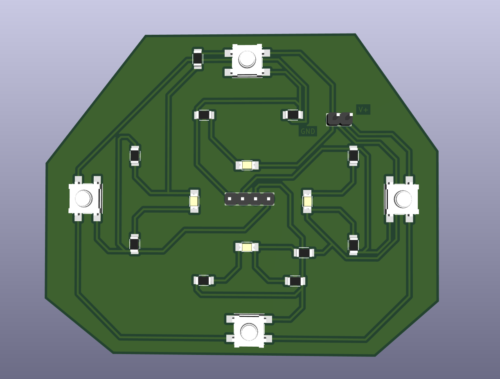

Aquí vamos documentando el proceso de diseño y fabricación de circuitos impresos que desarrollamos a lo largo del semestre, desde la primera práctica hasta el proyecto final.
Producción Electrónica busca que aprendamos el proceso completo detrás de un circuito impreso: del esquemático a la placa terminada, pasando por el diseño de pistas, la fabricación digital y el ensamble final.
Cada práctica es un paso más hacia el proyecto final del curso. Cada herramienta tiene su propia página con el proceso completo.

Diseño y fabricación de una placa PCB en KiCad, siguiendo un proceso completo que abarca desde el diseño del circuito y la distribución de sus componentes hasta la fabricación física mediante fresado en una placa fenólica con la MonoFab SRM-20.
Objetivo: Diseñar, fabricar y comprobar el funcionamiento de una PCB, aplicando correctamente las etapas de diseño electrónico, generación de archivos de manufactura, configuración del fresado y verificación final del circuito.
Este espacio se irá llenando con cada práctica del curso hasta llegar al proyecto final.
[Nombre de la universidad / lugar]